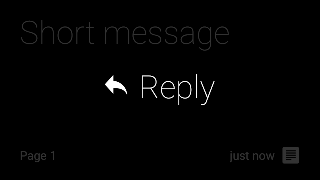
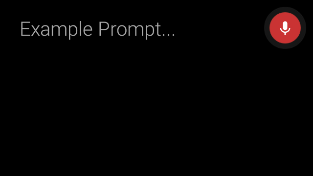
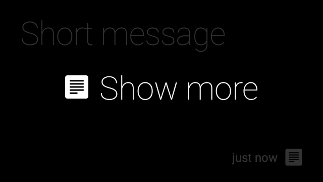
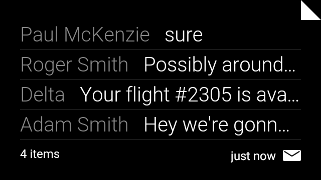
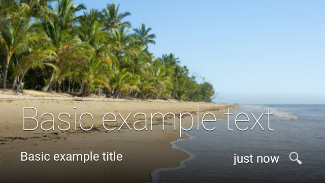

Android notifications are supported on Glass through Notification Sync. When the Android system sends a notification on a user’s phone, it also appears in their timeline on Glass. This allows virtually any app available on Android to display notifications on Glass with zero effort required on Glassware development.
Notifications on Glass works synchronously with your Android mobile phone. When you dismiss the notification on either of the devices, the system dismisses the notification on the other one.
WearableExtender provides extensions specifically for wearables. The following sections describe these extensions.
When you define a primary content action on the notification with setContentIntent(), the “Open on Phone” action appears on the Glass notification. You can add a maximum of three actions to your app. For more information on creating and handling actions for notifications, see Add Action buttons.
When your notification requires a text response, Glass can transcribe your voice. For more details on how to trigger voice recognition, see Receiving Voice Input on a Notification.
Note: While voice input works on Glass, pre-defined text responses aren’t supported.
 
To add more information to your notification without requiring users to open your app on their handheld device, you add pages to your notification. On Glass, these notifications have a “Show More” action that lets the user swipe through the cards. To add pages to your notifications, see Adding Pages to a Notification.

If your app creates multiple notifications, you should group them into a stack. On Glass, stacked notifications appear as card bundles. To learn more about stacking, see Stacking Notifications.

Background images give context on where notifications are coming from. Use the BigPictureStyle on Android notifications to automatically generate the Glass notification. This contextualized styling provides a better user experience. To see an example of additional styling of notifications on Wear, see Add Wearable Features.

Portions of this page are reproduced from work created and shared by Google and used according to terms described in the Creative Commons 4.0 Attribution License.